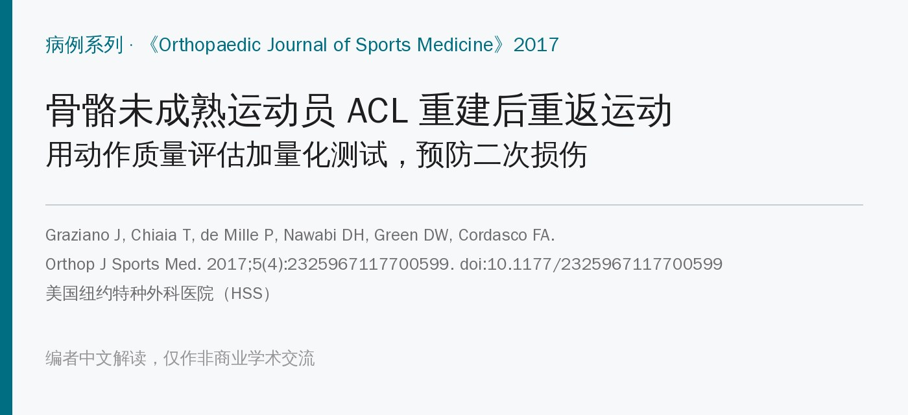
🔖原文信息（编者中文重排）
📚 文献信息
▪ Graziano J, Chiaia T, de Mille P, Nawabi DH, Green DW, Cordasco FA. Return to Sport for Skeletally Immature Athletes After ACL Reconstruction: Preventing a Second Injury Using a Quality of Movement Assessment and Quantitative Measures to Address Modifiable Risk Factors. Orthop J Sports Med. 2017;5(4):2325967117700599. doi:10.1177/2325967117700599
▪ 中文题目：骨骼未成熟运动员 ACL 重建后重返运动：以动作质量评估和量化测试处理可改变的危险因素，预防二次损伤
▪ 作者单位：美国纽约特种外科医院（HSS）；洛杉矶 ADI Rehab
▪ 研究类型：病例系列（证据等级 4 级），前瞻性随访，没有对照组
孩子 ACL 断了越来越常见。重建后最怕的不是回不去，而是回去又断：原文引用的数据是，年轻运动员重返运动后第 1 年 ACL 再损伤的风险是对照的 15 倍，2 年内是 6 倍，回到伤前水平的只有 43%。
传统的放行标准看量化指标：肌力、单腿跳的对称指数、术后多少个月。问题是这些数字看不出动作做得好不好。
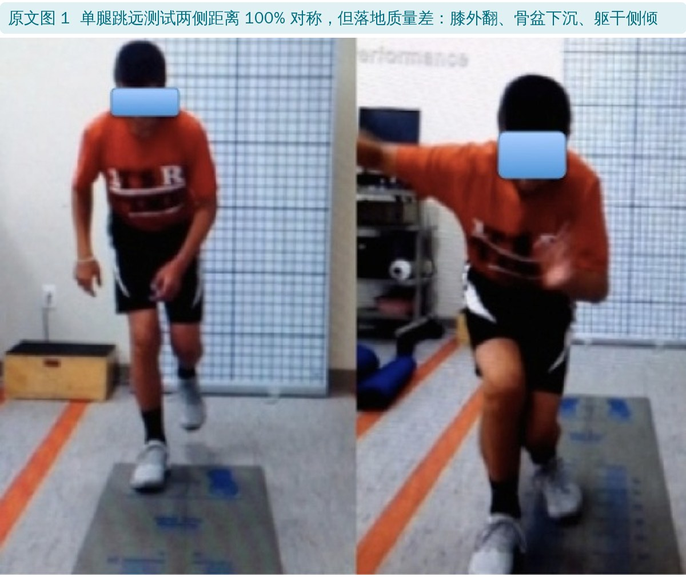
上图这个孩子单腿跳远两侧100% 对称，按数字该过关，可落地时膝外翻、骨盆下沉、躯干侧倾，正是 ACL 损伤的典型姿势。
HSS 团队的做法是在量化测试之外，加一套动作质量评估（QMA）：录像看孩子做一系列由易到难的动作，找出力线、对称、策略上的问题，针对性训练，复评合格才放行。这篇报告了 42 名骨骼未成熟运动员用这套流程的结果。
• 2010 年 12 月至 2013 年，42 名骨骼未成熟运动员（剩余生长 > 1 年），女 12、男 30，手术时平均 12 岁（10～15 岁）
• 同侧腘绳肌腱自体移植，全关节内技术：全骨骺内重建 25 人、部分经骺重建 17 人（穿过胫骨骺板、不穿股骨骺板），按骨龄选择
• 排除合并其他韧带重建、需要软骨修复的；合并半月板修补或部分切除的纳入
• 主要项目：足球（36%）、长曲棍球（29%）
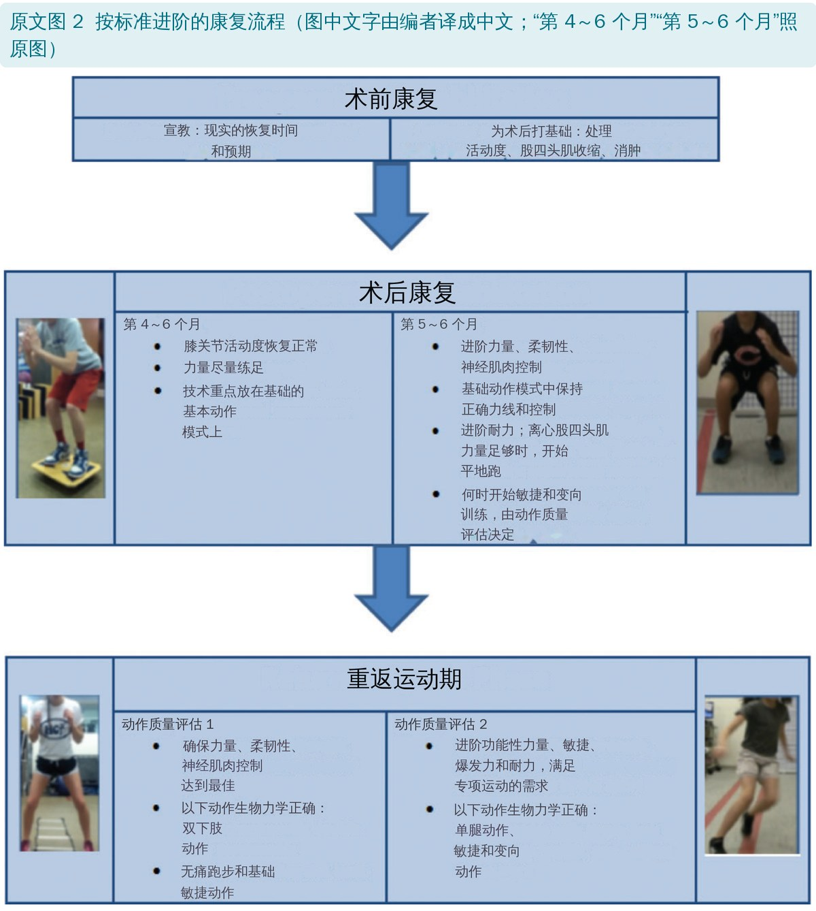
先跟家长把时间说清楚：最少 9 个月，多半 12 个月。同时处理活动度、练股四头肌收缩、消肿。
• 前 12 周每周来 2 次，走标准 ACL 重建康复方案
• 第 3～6 个月转到孩子所在运动队的体能教练那里，每周 2～3 次；治疗师定期查肌力、活动度、柔韧性、神经肌肉控制和动作模式
• 到 6 个月，要有足够力量做好基础动作：深蹲、单腿站、前向下台阶、单腿臀桥
• KT-1000：第一次动作质量评估前或当时测，看胫骨前移的双侧差
• 膝屈伸等速肌力：5 个月起测，放行时再测
• 单腿跳：5 个月起测
• 站立位 X 线和 MRI 在术后 6 个月、1 年及之后每年复查到骨骼成熟，用来看生长，不作为放行标准
大约术后 6～7 个月开始。用 Dartfish 录像软件拍一组运动里关键的动作，按难度和专项负荷逐级进阶。录像还有一个作用：回放给孩子和家长看，比口头解释更容易让他们理解为什么还不能回场。
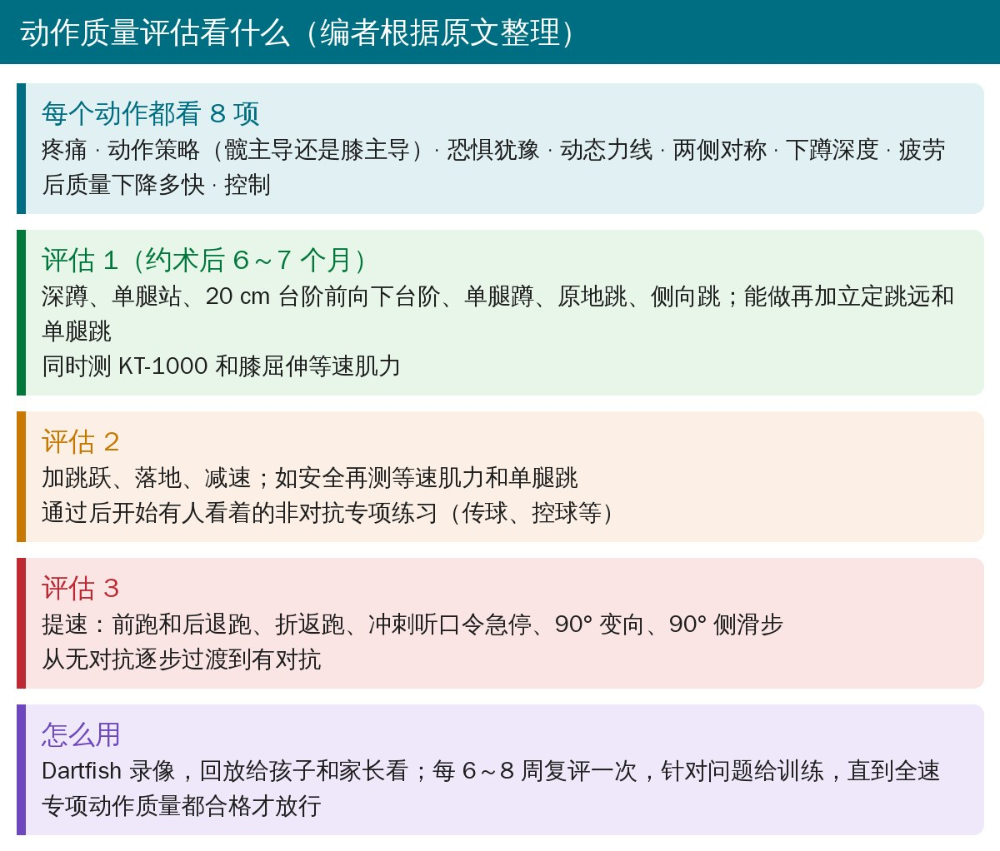
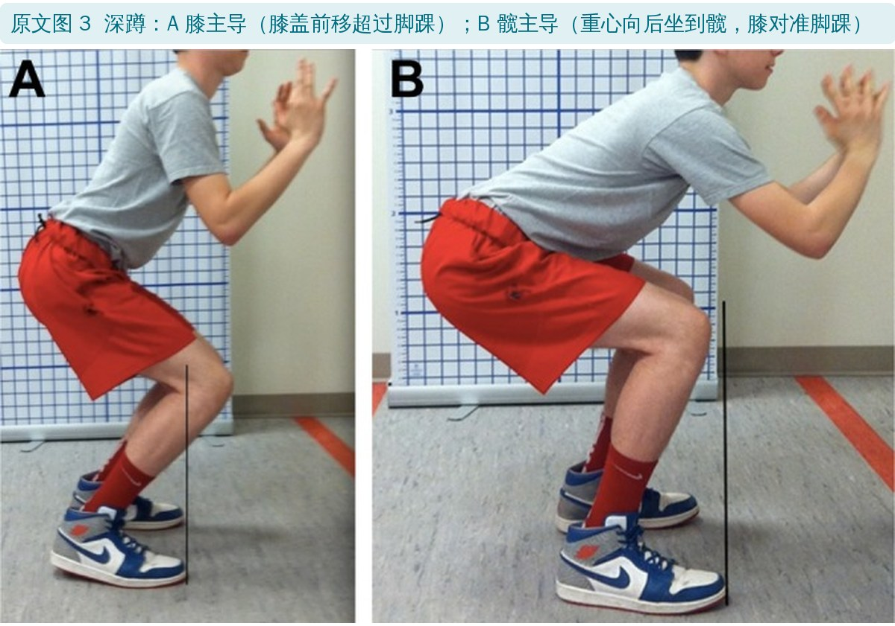
从髋开始发力叫髋主导。膝主导的孩子下蹲时膝盖往前顶过脚踝；髋主导的能把重心往后坐到髋上，膝对准脚踝。
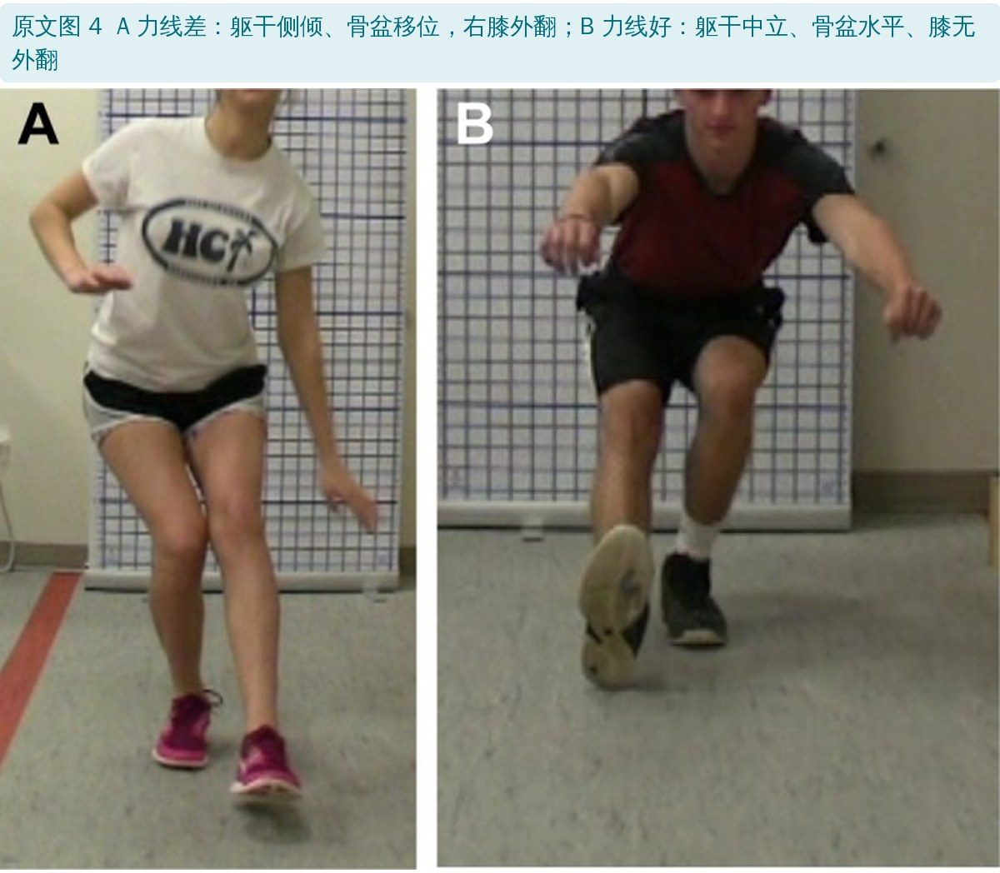
在矢状面和冠状面看躯干、髋、膝、足的对线。例如单腿蹲时躯干向一侧偏，膝就容易外翻；正确的应该是躯干中立、骨盆水平、膝不内扣。
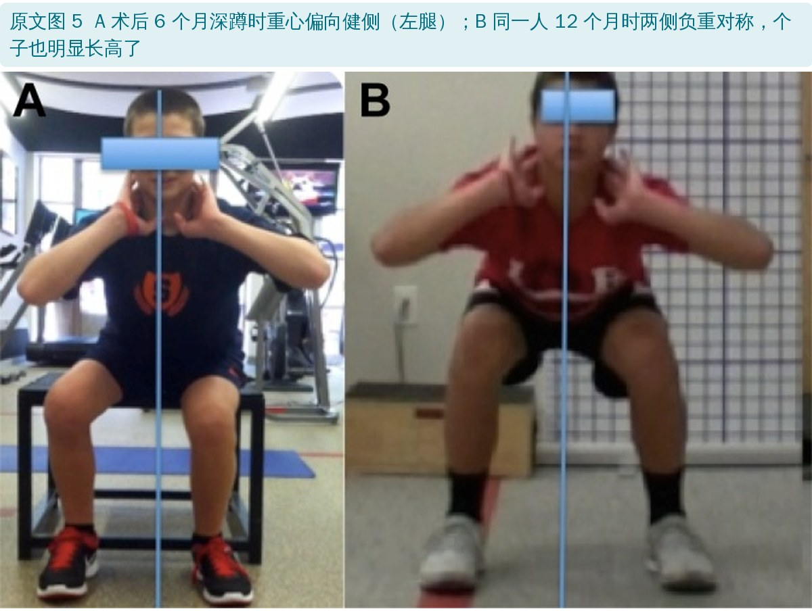
双腿动作里重心偏向一侧就是不对称。上图同一个孩子，6 个月时深蹲重心偏向健侧，12 个月时两侧负重对称了，个子也长高了一截。
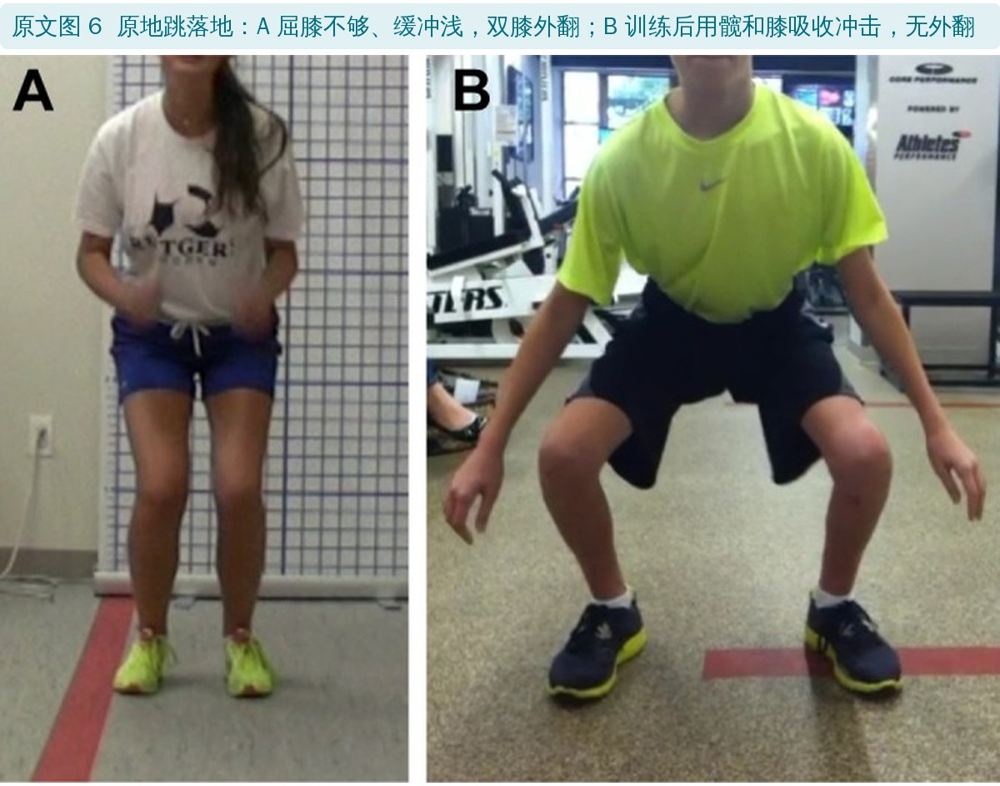
下蹲和落地的深度反映力量、柔韧性和吸收地面反作用力的能力。缓冲浅、屈膝不够，落地冲击大，膝也更容易外翻。
• 恐惧：动作变慢、犹豫
• 疲劳：次数一多质量就下降
• 疼痛：每个动作都问；一痛就停下来查原因
表 1 按动作质量评估和量化测试进阶重返运动（编者翻译）
| 评估 | 动作质量 | 量化测试 | 专项进阶 |
|---|---|---|---|
| 1 | 深蹲、单腿站、20 cm（8 英寸）前向下台阶、单腿蹲、原地跳 | KT-1000；膝屈伸等速肌力 | 进阶到单腿动作；练耐力；离心股四头肌力量够了就开始平地跑 |
| 2 | 评估 1 的动作加上跳跃、落地、减速 | 等速肌力、单腿跳（安全时） | 有人看着做非对抗专项练习（踢传、控球等）；加强度和耐力；何时开始敏捷和变向由动作质量决定 |
| 3 | 提速做跳跃、落地、减速和专项动作：前跑和后退跑、折返跑、冲刺听口令急停、90° 变向、90° 侧滑步 | 等速肌力、单腿跳（评估 2 仍有差距时） | 从无对抗过渡到有对抗 |
原文注：评估 1 之后的进阶高度个体化，按孩子的进展、专项需求和治疗师判断调整
评估 1 动作没问题、力量基础够，就可以开始跑步和增强式训练，并进阶单腿力量训练。之后每 6～8 周复评，重点看单腿动作（单腿蹲、单腿跳、跳到对侧腿）和不同速度下的变向、急停、减速。
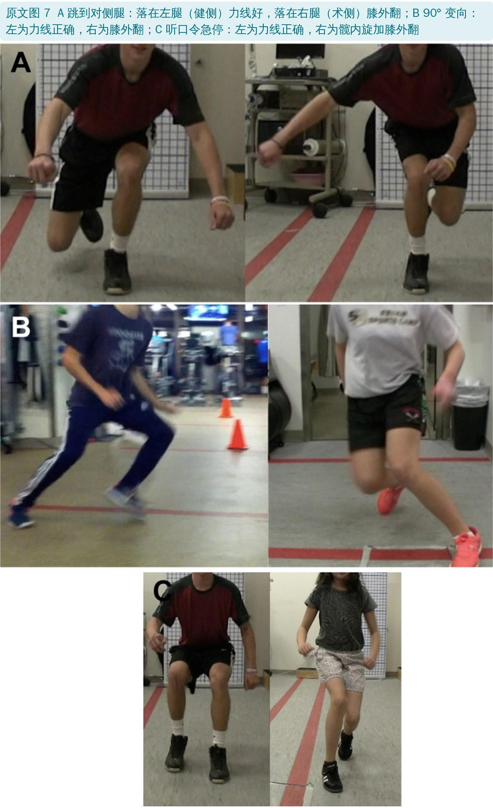
过了这关，在可控环境里把非对抗训练、变向和敏捷提到 100% 速度，先在治疗师或防护师看着下做专项练习，再回到球队训练。全速专项动作质量合格，加上量化指标和项目需求都满足，由医生、治疗师、防护师、教练、家长和孩子一起决定放行。
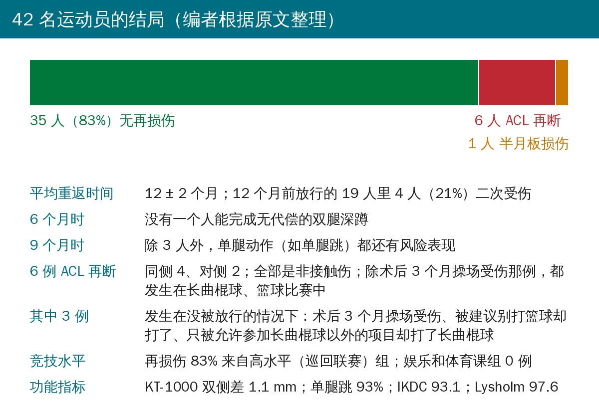
• 平均 12 ± 2 个月回到不受限的竞技运动；42 人中 39 人（93%）回到主项，35 人（83%）重返且没有再受伤
• 6 个月时没有一个孩子能做出无代偿的双腿深蹲，9 个月前也没有人达到重返标准；到 9 个月，除 3 人外单腿动作都还有风险表现
• 12 个月前放行的 19 人（平均 10.5 个月）里有 4 人（21%）二次受伤
• 放行时：KT-1000 双侧差 1.1 ± 0.6 mm；180°/s 等速伸膝力矩差 8.3%、屈膝差 11.3%；单腿跳 93%；IKDC 93.1，Lysholm 97.6
• 随访影像没有明显的生长障碍（> 1.5 cm）
表 3 二次损伤汇总（编者翻译）
| 性别 | 损伤 | 放行情况 | 受伤时间（术后月） | 怎么伤的 | 原文记录的危险因素 |
|---|---|---|---|---|---|
| 男 | 同侧 ACL | 未放行 | 3 | 操场 | 术后才 3 个月 |
| 男 | 对侧 ACL | 11 个月放行 | 12 | 长曲棍球比赛 | 双膝明显“过屈” |
| 男 | 同侧 ACL | 9 个月放行踢足球，建议别打篮球 | 12 | 篮球比赛 | 跳跃落地有缺陷 |
| 男 | 同侧 ACL | 12 个月放行 | 15～16 | 长曲棍球比赛 | 双膝明显“过屈” |
| 男 | 同侧内侧半月板 | 9 个月放行 | 10 | 长曲棍球训练 | 双膝过伸 |
| 女 | 对侧 ACL | 10 个月放行，长曲棍球除外 | 11.5 | 长曲棍球比赛 | 未见 |
| 女 | 同侧 ACL | 14 个月放行 | 25 | 长曲棍球比赛 | 协调性缺陷，已到上限 |
全部是非接触伤。“过屈”照原文表 3 翻译，正文同一批人写的是“过伸 > 10°、膝反张”，见文末
• ACL 再断 6 人（14%）：同侧 4、对侧 2。有 3 例是在没被放行的情况下受伤的
• 放行后再受伤的 4 人（含半月板那例）中，正文说 3 人有双膝过伸 > 10°
• 再损伤的 83% 来自高水平变向项目（参加巡回联赛的足球、长曲棍球等）；滑雪竞速、体育课和娱乐联赛组没有人再受伤
• 男女的二次损伤率都是 16.7%（5/30 和 2/12）；两名女孩受伤时都在 14～16 岁这个高危年龄
• 长个子会把动作打乱：身高、体重、骨杠杆变长，重心改变。好几个孩子过完暑假回来个子猛长，之前练好的动作又走样了，得重新练技术、柔韧和力量。所以骨骼成熟前要定期复评，12～13 岁的女孩到 14～16 岁高危期前尤其要再查
• 和文献比：作者引用的数据是 10～25 岁人群重返运动后 24 个月内二次 ACL 损伤 29.5%（对侧 20.5%、同侧 9%）；本组 14%（对侧 2 人、同侧 4 人），去掉违背医嘱的 2 人是 9%
• 对侧为什么会断：作者认为是代偿把负荷转移到健侧，或者健侧本身就有危险因素；疲劳也会让动作变差，所以耐力要够
• 不能只按时间放行：6 个月和 9 个月时动作质量差的比例太高，儿童运动员不该只凭术后月数放行
• 高水平变向项目需要更严的标准：再损伤集中在这一组
• 作者自认的局限：不是随机对照，只能说明相关；人群的项目和社会经济背景单一；QMA 费时费钱，不是所有地方都做得起；手术由专做儿童运动医学的医生完成；没有评估不可改变的危险因素
• 证据等级低：4 级病例系列，没有对照组。14% 和文献 29.5% 的比较不是同一批人、随访起点也不一样（文献从重返运动算 24 个月，本组从手术算，最晚的再损伤在术后 25 个月），说明不了 QMA 降低了再损伤
• “我们的结果直接归功于……”说得太满：作者在讨论里把结果直接归功于多学科协作和定性加定量的评估，病例系列做不到这种因果推断，局限里也承认了
• QMA 没有标准化：8 项看什么写得很清楚，但没有评分标准、没有及格线、没有评估者间信度，换一家机构很难照搬
• 优点：把量化测试、动作质量、生长发育和竞技水平放在一起考虑，每一关做什么动作很具体，照片示范清楚；“单腿跳 100% 对称也可能动作很差”这一点对临床很有提醒作用
• 二次损伤人数：摘要写“6 人（14%）二次损伤”，正文是 7 人（6 例 ACL 加 1 例半月板）
• 违背医嘱的人数：摘要说 3 人（50%）是在没被放行的项目中受伤；正文先说“再断 ACL 的人里 4 人（67%）已被放行、3 人（50%）违背医嘱”，4 + 3 = 7，超过 6 例 ACL；讨论又两次说是 2 人。按表 3，放行后再断 ACL 的是 3 人，不是 4 人
• 1 年内再损伤的比例：摘要和结果说一半（3 例），讨论说 60%；按表 3 的月份，12 个月及以内有 4 例
• “全部发生在变向项目中”：摘要和正文都这么说，但表 3 里有一例是术后 3 个月在操场受伤
• “过屈”和“过伸”：正文说放行后再受伤的 4 人中 3 人双膝过伸 > 10°，表 3 有两人写的却是“明显过屈活动度”
• Marx 评分超出满分：“HSS 改良 Marx 运动评分 23.2”，Marx 量表满分 16 分。同一团队另一篇（Cordasco 2017）报告的是 Pedi-FABS 23.9（满分 30），这里很可能是把 Pedi-FABS 写错了名字
• 年龄范围：正文说手术时 10～15 岁，表 2 里却有受伤时 16 岁和 17 岁的；表 2 还有一行性别栏填的是“PTP”
• 百分比不一致：回到主项结果写 93%，讨论写 91%（39/42 是 93%）；高水平组正文写 64%，讨论写 65%；对侧再断 2/42 写成 4.5%（应为 4.8%）
• 康复时间写法打架：方法说“前 12 周每周 2 次，之后再按标准方案做前 12～16 周”；图 2 的术后两栏是“第 4～6 个月”和“第 5～6 个月”，时间重叠，0～3 个月没写
• 图号引错：讲单腿蹲时躯干侧倾导致膝外翻，引的是图 3A（深蹲的膝主导），应该是图 4A
• 引用对不上：二次损伤 29.5%、对侧 20.5%、同侧 9% 引的是文献 3（疲劳对急停跳的影响）和 15（大学生 ACL 损伤），这组数字实际出自 Paterno 2014（文中文献 33）；竞技水平分级和“43% 回到伤前水平”引的文献 27 是心血管疾病运动员参赛资格的会议文件
• 局限说没评估不可改变的危险因素：可结果里报告了膝过伸、结缔组织病，还据此建议一名孩子不踢足球
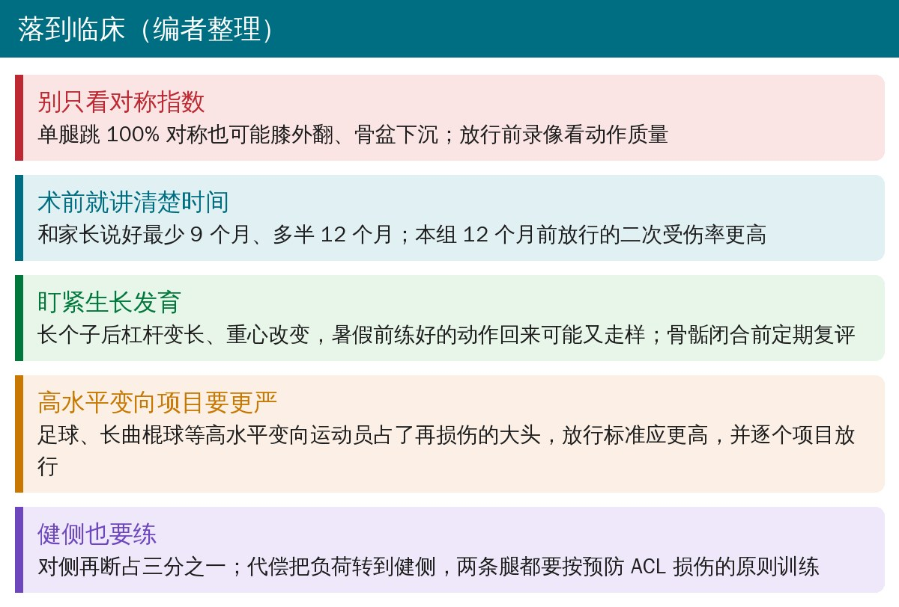
🔖临床要点（编者整理）
• 别只看对称指数：单腿跳、等速肌力的数字过关，还要录像看落地和变向时膝有没有内扣、骨盆有没有下沉、躯干有没有侧倾
• 术前就和家长把时间说清楚：最少 9 个月，多半 12 个月，按动作质量放行而不是按日历
• 生长期要反复评：长个子后动作可能退步，骨骼成熟前定期复评；女孩在 14～16 岁前尤其要查
• 高水平变向项目放行要更严，可以按项目分别放行（例如先放行滑雪，暂不放行长曲棍球）
• 两条腿都要练：对侧再断占了三分之一，按 ACL 损伤预防的原则训练双下肢和耐力
• QMA 的具体评分标准原文没给，借鉴时要结合本单位已有的动作筛查工具
欢迎关注骨科康复小黄公众号，获取更多物理治疗的专业知识！
📄参考文献：
Graziano J, Chiaia T, de Mille P, Nawabi DH, Green DW, Cordasco FA. Return to Sport for Skeletally Immature Athletes After ACL Reconstruction: Preventing a Second Injury Using a Quality of Movement Assessment and Quantitative Measures to Address Modifiable Risk Factors. Orthop J Sports Med. 2017;5(4):2325967117700599. doi:10.1177/2325967117700599
编者核对时参考：Cordasco FA, Mayer SW, Green DW. Am J Sports Med. 2017;45(4):856-863. doi:10.1177/0363546516677723；Paterno MV, et al. Am J Sports Med. 2014;42(7):1567-1573. doi:10.1177/0363546514530088（信息来自 PubMed）
原文 © The Author(s) 2017，以知识共享署名—非商业性使用—禁止演绎 3.0 协议（CC BY-NC-ND 3.0）开放获取。本文为非商业学术交流用的中文解读：照片引自原文图 1、3～7（编者加中文图注）；原文图 2 中的英文由编者译成中文覆盖原位置；表格为编者翻译；首图、评估卡、结果图和临床要点卡为编者根据原文整理。版权归原作者所有，仅供学习交流，如有侵权请联系删除。